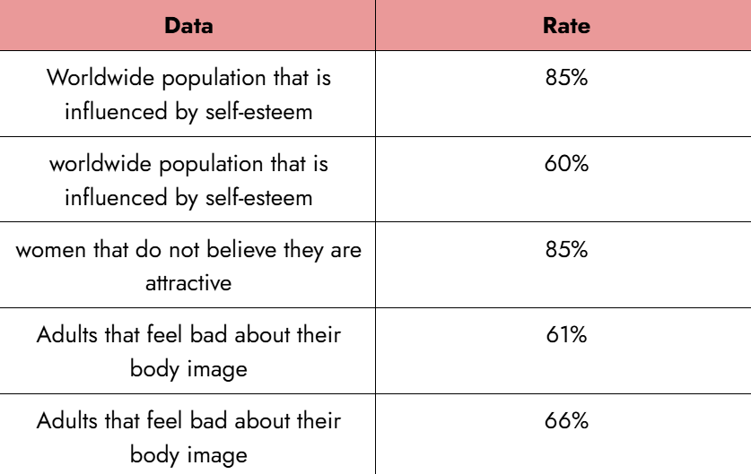
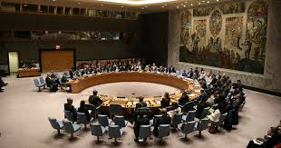
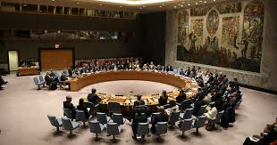

Goal of Happy Heart, Happy Life:
- disseminate what mental health is and its importance
- everyone to love themselves, to take care of themselves properly, and be happy, hopeful, optimistic, and strong
- Tell people, who are in the dark, that they are not alone, and worthless
- spread awareness of how important our words, actions, and everyday habits affect the mental health of the people around them, and their mental health
Background of the Problem:
Did you know that people around the world, including in the Philippines, experience mental health issues ranging from the smallest children to the “toughest” adults? In 2019, 970 million people were suffering from mental health issues (World Health Organization: WHO, 2022). In the Philippines in 2024, there was an estimation of 11.3% to 11.6% of the Filipino population that live in to be suffering internally (Nd, 2024). In ages 10-19, 1 in every 7 of them experiences a mental disorder, and 15% of working adults also experience the same (World Health Organization: WHO, 2024). From 2000 to 2021, rates of suicide in the Philippines have been increasing (World Bank Open Data, n.d.). Studies also show that everyday, approximately 70% of our thoughts are negative (Mo, 2025).
Factors for these issues are not only inborn or genetic, but also things that we can experience in life, like abuse, trauma, neglect, social isolation or loneliness, discrimination, social disadvantage, stress, loss, or pressure that ledto the most common mental health disorders, depression, and anxiety (What Causes Mental Health Problems?, n.d.). Theseproblems are also increasing every year (Foulkes & Andrews, 2023). Harassment that is very common in the world, such asdomestic abuse, bullying, or sexual harassment, moreover, has an enormous effect on people’s mental health (Department of Veterans Affairs (jdt), 2022).

Currently Done about the Problem:
In the Philippines, there is a lot being done about it, such as the government making Republic Acts
addressing the problem. Additionally, people are helping through organizations, and websites are trying to
spread awareness and comfort.
R.A. 11036 focuses on human rights and focuses on mental health, as it is called the “Mental Health Act”, and
R.A. 12080 focuses on the importance of students' and youth’s health, and due to that, they should prohibit
any action that can damage so (REPUBLIC ACT NO. 12080 - Supreme Court ELibrary, n.d.; Republic Act No.
11036, n.d.). Other Republic Acts like 10627 (Anti-Bullying), 9710 (Women Human Rights), 11313 (Safe Spaces
Act), 7877 (Anti-Sexual Harassment), and many more help tolerate non-traumatic stressors that cause mental
health issues (Republic Act No. 10627, n.d.; Republic Act No. 11313, n.d.; REPUBLIC ACT NO. 7877 - Supreme
Court ELibrary, n.d.; Republic Act 9710: The Magna Carta of Women | Philippine Commission on Women, 2009).
Organizations in the Philippines like MentalHealthPH and Philippine Mental Health
Association, Inc., alsosupport Mental Health (Philippine Mental Health Association, Inc., n.d.; MentalHealthPH,
2023). ThePhilippines, moreover, hosts events that raise awareness of mental health and launch movements for it.
 

Where We Come In:
With all of the big organizations, movements, and laws, here comes this small advocacy group that aims to spread mental health awareness, self-awareness, and loving and caring for yourself and others. Through this website, we aim to publicize and disseminate information about mental health, and provide ways to take care and have a deeper relationship with yourself and people that are good for you. Skibigoals, the heads of Happy Heart, Happy Life, and the Happy Hearts, the community and volunteers and supporters, are disseminating the information, hosting events, counselling sessions on a small scope in homes in communities, students in students, children in orphanages, and patients in hospitals, spreading the light and warmth.
Call To Action:
What this call to action means is that this world, from the start, deserves that light and warmth—understanding, love, care, hope, and joy, but over time this world covers that truth, and hides away the importance of it. Together, as family and friends, let us take away that cover—from darkness and coldness, to light and warmth.